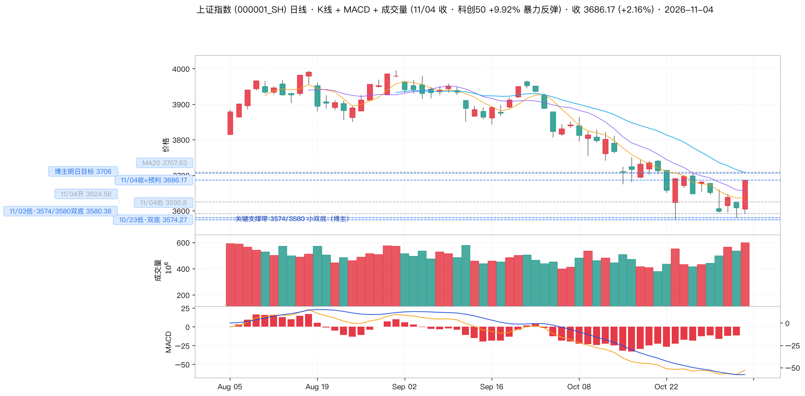
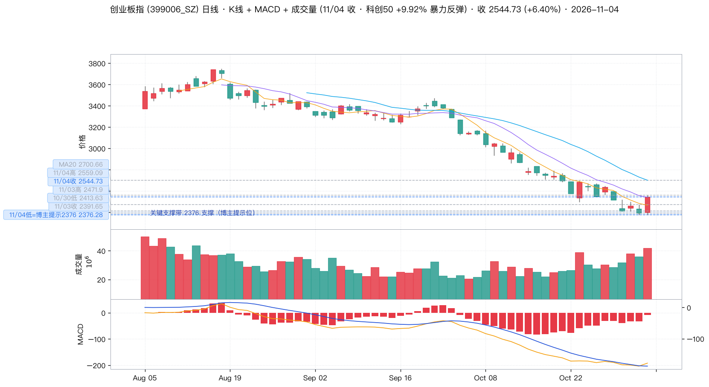
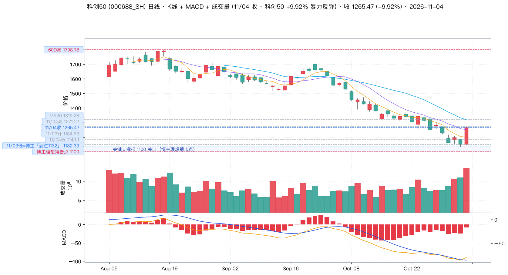
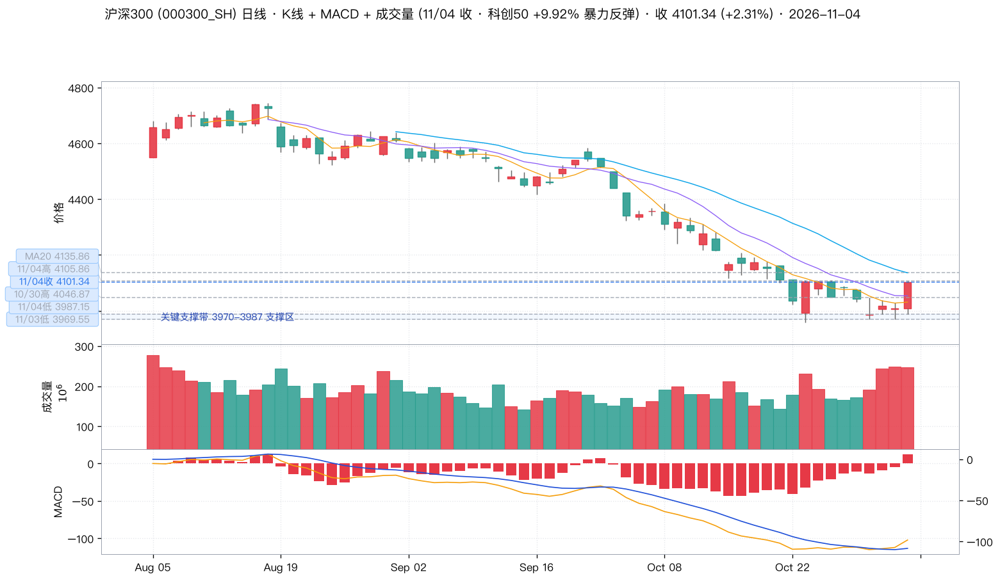
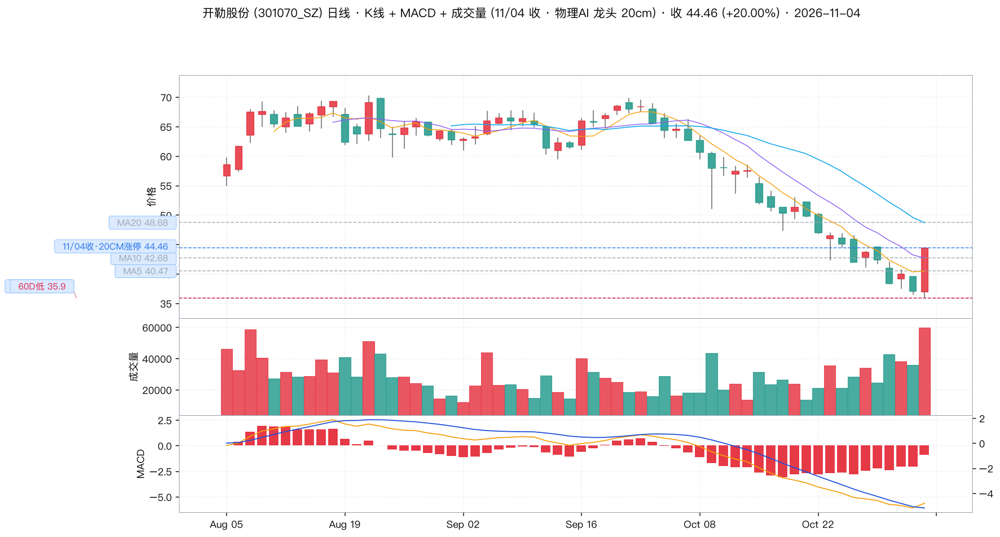
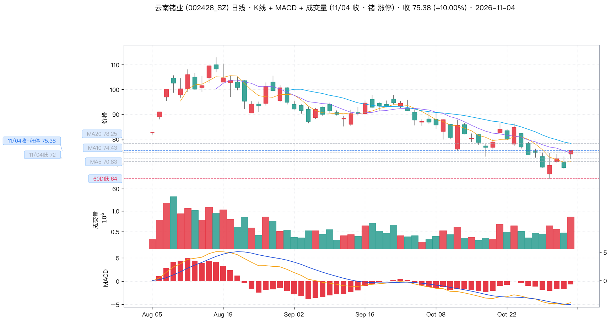
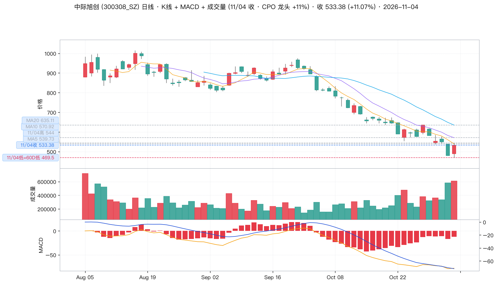

🟢 博主全天由「是不是很害怕？」翻转到「一阳改三观！」，15:08 预判「今天收 3686 点、增量 3368 亿」——实际收 3686.17、增量 3368 亿，点位与方向首次双双全中。
11/04 是 wu2198 近期罕见的方向与点位同时正确的一天：沪指 +2.16%、创业板 +6.40%、科创50 +9.92%、沪深300 +2.31% 全线上涨；涨停 365 家（前一交易日仅 59 家），跌停从 93 家骤降至 16 家。
但「全对」不等于「该跟」。博主本人给出的理想买点（科创50 1100 关口）今天没等到——最低只到 1149.10 就已反弹 9.92%；他反复示范的纪律是「把每一轮大跌风险回避，拿捏住大跌后的机会」，而 11/04 的形态更接近「一根阳线改三观」。详见下方「风险提示」。
博主 11/04 早盘刚写完长文批评别人：「在 6 月份科技股疯狂的时候我反复提醒大家科技类股的泡沫+风险」；下午 14:56 就写下「正所谓一阳改三观！」——上午还在为科创50 1132 点下跌焦虑，下午就因为一根 +9.92% 的阳线改变了立场。
同一个博主，同一天，在同一个板块上，先扮演「风险提示者」，再扮演「情绪被行情改变者」。这不是说他的判断错了（今天他全对了），而是提醒：当一个人的观点强度随当日涨跌摆动时，他给出的点位可以跟，立场不要跟。
| 时间 | 方向 | 原文 / 摘要 | 点赞 | 类型 |
|---|---|---|---|---|
| 11/04 18:30 |
⚪ | 「#这就是勤换洗水杯的原因#意思是说，最好不洗！」 | 4374 | 生活 |
| 11/04 16:54 |
🟢 | 转发自己 15:08 的收盘总结「收到请回复666或者点赞支持一下！」 |
11292 | 收盘总结 |
| 11/04 16:09 |
🟢 | 「科创50指数到过1132点……今天大涨9.92%！」 |
7592 | 大盘判断点位 |
| 11/04 15:51 |
🟢 | 「#A股暴力反弹原因#叫绝处逢生！」 | 6809 | 大盘判断 |
| 11/04 15:24 |
🟡 | 「今天多了好多票子，晚上白马？」 |
9352 | 板块推测 |
| 11/04 15:08 |
🟢 | 「今天收3686点，增量3368亿……明天收复3706点后以3574和3580形成小双底反击之势……收到请回复666或者点赞支持一下！」 |
16089 | 收盘总结点位 |
| 11/04 15:01 |
🟢 | 「我6股提示科技股起码腰斩，被骂死了！」 |
8750 | 自我印证 |
| 11/04 14:56 |
🟢 | 长文：「在5月初4256点之后我反复提示第四大浪调整，创业板4380点后我提示三川顶……我是如何反复提示风险的？这两天大盘3580和创业板指数2376点又如何提示大家的？在市场悲观+绝望的时候，我给大家打打气。在6月份科技股疯狂的时候我反复提醒大家科技类股的泡沫+风险……」 |
14189 | 大盘复盘点位 |
| 11/04 14:38 |
🟢 | 「这两天很多人嘲讽『一剑封喉』……是多么的无知可笑啊！」 | 13572 | 自我印证 |
| 11/04 14:00 |
🟢 | 「创业板指数己经返涨4% 了……不啵一口？」「已经5.4%！」「掐指一算，创业板指数今天『一吃三』，争夺『一吃四』……」「再用力点……争取一吃六！」 |
12000+ | 盘中播报 |
| 11/04 14:00 |
🟢 | 转发头条文章《第四浪的底部位置》——「2026年度分析之一（仅供参考，风险自理）上半年只看4256点（实际试了4258点），创业板指……」 |
5077 | 框架文章 |
| 11/04 14:00 |
🟢 | 「我相信我的技术！」（👍1541） | 15411 | 情绪 |
| 11/04 12:00 |
🟡 | 「日本，韩国，目前都出现大跌3%以上，道指期货目前也跌333点！」 |
7994 | 外盘速报 |
| 11/04 12:00 |
🟢 | 「按目前看人形机器人，GPU，物理AI，端侧等表现不错！」（👍7639） |
7639 | 行业板块 |
| 11/04 10:00 |
🟡 | 「市场会磨掉你的意志！」（👍9204） | 9204 | 情绪 |
| 11/04 10:00 |
🟢 | 「物理AI龙头冲20厘米，端侧纷纷走强！」 |
7680 | 行业板块 |
| 11/04 09:00 |
🟢 | 「稀有金属，截止目前看是锗，钨涨幅领先！」 |
9066 | 行业板块 |
| 11/04 09:00 |
🟢 | 「参考大盘4256和创业板指数4380区域撤离的投资者，可以继续分批布局接回来，然后等风……支持的点个赞！」（👍1.6万） |
16000+ | 操作建议 |
| 11/04 09:00 |
🟡 | 「很多人还在纠结，只能怪你自己，说得很清楚的。」转发：「前面说得很清楚，C3会有一批个股提前完成下跌，稳健的可以等C5再干……没有人叫你一定要参与C4哦。」 |
9739 | 技术分析 |
| 11/04 09:00 |
🟡 | 「身似青山常自在，心如秋水自安然。很多事情不必问结果，握紧的手累了就松开。风来了听风，雨来了看雨。把每一轮大跌风险回避，拿捏住大跌后的机会，就是对股市最好的回答。」（👍1.1万） |
11000+ | 操作哲学 |
| 11/04 12:00 |
🟡 | 「我5月份就苦口婆心了，按计划撤离的是伤不到本金的……能执行的人有吗？」转发：「不管是2024年赚的钱，还是2025年或者2026年上半年赚到的钱，我希望大家撤离大部分盈利和本金，或者将本金撤离，只留部分盈利在市场里继续等待机会……我不怕错过，只怕自己做错。」 |
8197 | 仓位管理 |
| 11/04 12:00 |
🟡 | 「怕的话，高位的时候为什么不控制风险？」转发「是不是很害怕？」（👍9120 / 1.1万） |
9120 | 情绪 |
| 11/03 22:48 |
⚪ | 「啵一个……大家晚安！」 | 7050 | 问候 |
| 11/03 22:43 |
🟡 | 「#证监会#又出新工具！」 | 5598 | 宏观 |
| 11/03 17:46 |
🟢 | 「CPO三大龙头这轮下跌了66至72%左右……才短短4个月天地之别。疯狂的时候提示风险，被骂死！」 |
9718 | 行业个股 |
| 11/03 15:40 |
🟢 | 「行情很多时候都是：在绝望中逢生（如今），在欢乐中死亡（6月份的科技）。」（👍1万） |
10000+ | 方法论 |
| 11/03 16:34 |
⚪ | 「老铁们……加油！」 | 9172 | 情绪 |
| 11/03 16:09 |
⚪ | 「股市不是生活的全部，还有诗和远方！」 | 8864 | 情绪 |
| 标的 | 关键位 | 博主原话 / 含义 | 11/04 实际验证 |
|---|---|---|---|
| 上证指数 | 3706 | 「明天收复3706点后…形成反击之势」 | 今日收 3686.17，尚未收复，差 19.83 点（0.54%）。3706 恰与 MA20 3707.63 几乎重合 —— 明日能否站上 MA20 是本轮反弹成色的第一道关。 |
| 3686 | 「今天收3686点」 | ✅ 实际收 3686.17，偏差 0.17 点（0.005%） | |
| 3580 / 3574 | 「以3574和3580形成小双底反击之势」 | ✅ 3580 = 11/03 最低 3580.38；3574 = 10/23 最低 3574.27。今日最低 3590.80，精准站在双底之上，双底有效。 | |
| 4256 / 4380 | 「参考大盘4256和创业板4380区域撤离的投资者，可以继续分批布局接回来」 | 接回区间在 4256（沪指）/ 4380（创业板），远高于今天 3686 / 2544 —— 博主给的是「更早、更低」的接回位，不是让今天追高。 | |
| 创业板指 | 2376 | 长文：「这两天…创业板指数2376点又如何提示大家的？」 | ✅ 11/03 最低 2376.39，11/04 最低 2376.28 —— 连续两日精准触及该位，为今日反弹的起点。 |
| 2559 | 11/04 盘中高点 | 今日最高 2559.09，为短线第一压力（MA10 2540.84 已被收复，MA20 2700.66 未过） | |
| 4380 | 「创业板4380点后我提示三川顶」 | 历史撤离位，距今 -41.8%，本轮反弹远未回到该区域 | |
| 科创 50 | 1100 | 「预计要到1100关口附近才是最理想的搏击点」 | ⚠️ 今日最低仅 1149.10，根本没到 1100 就已反弹 +9.92%。博主自设的最优买点被跳过 —— 这是今日最重要的操作提示。 |
| 1132 | 「科创50指数到过1132点」 | ✅ 11/03 最低 1132.33，分毫不差 | |
| 2255 / 2233 1549 / 1257 |
10/23 帖的下跌路径 | ✅ 10/23 最低 1257.29（博主「今天到了1257点，比之前预期的1274点低」）；60 日高 1798.78 → 1132.33，区间跌幅 -37.0%，「科技股起码腰斩」在指数层面成立 |

上方为日线 K 线 + MA5/10/20，图为 MACD，底部为成交量（红涨绿跌）。左侧虚线为关键位：3706 博主明日目标、3686.17 今日收盘（=博主预判）、3580 / 3574 小双底。今日一根阳线收在全天最高点，站上 MA5（3636.55）与 MA10（3655.85），但仍在 MA20（3707.63）之下。

左虚线：2376 支撑（博主提示位）、2544.73 今日收盘、2559.09 今日高点。今日最低 2376.28 精准踩在博主提示的 2376 上后暴力反包；收复 MA10（2540.84），MA20 2700.66 尚未收复。MACD 绿柱大幅收敛、DIF 上穿。

左虚线：1100 博主理想搏击点、1132.33 博主「到过1132点」、1265.47 今日收盘、1798.78 60 日高。今日自 1149.10 拉起收在最高区，成交额放到 1344 万手（前一日 1096 万手），是本轮放量最大的一天。收复 MA10（1250.47），MA20 1319.28 仍差 4.3%。距博主理想买点 1100 尚有 13.1% 空间。

左虚线：4101.34 今日收盘、4105.86 今日高点、3969.55 / 3987.15 支撑区。沪深300 +2.31% 明显弱于创业板 +6.40% 与科创50 +9.92%，说明这是一次成长股主导的情绪修复，而不是权重搭台的全市场反转。
博主依据：11/04 15:01「我6股提示科技股起码腰斩，被骂死了！」+ 16:09「科创50指数到过1132点……今天大涨9.92%！」——博主把本轮反弹归功于自己在 6 月对科技股泡沫的预警，等于给这个板块盖了自己的章。
盘面实证：全市场 177 只半导体股涨幅超 5%，26 家 20cm 涨停中大半是半导体设备：拓荆科技（+20.00%）、芯源微（+20.00%）、华峰测控（+20.00%）、富创精密（+20.00%）、中科飞测（+20.00%）、思瑞浦（+20.00%）、强一股份（+20.00%）、京仪装备（+20.00%）、正帆科技（+20.00%）、盛美上海（+19.82%）、江丰电子（+20.00%）；主板同步涨停潮（339 家 10cm 涨停）。
位置：科创50 从 60 日高 1798.78 跌到 1132.33（-37.0%），今天收 1265.47，仍在 60 日高下方 29.6%，也未收复 MA20（1319.28）。
⚠️ 风险：这是「跌深反弹 + 情绪修复」的双重叠加，不是新周期启动。20cm 涨停潮出现后，次日高开低走的概率显著上升；博主本人的理想买点（1100）已经错过。
关键位：1100（博主理想搏击点）｜1132.33（11/03 低）｜1265.47（今收）｜1319.28（MA20）｜1798.78（60D 高）
博主依据：11/04 10:00「物理AI龙头冲20厘米，端侧纷纷走强！」（👍7680）＋ 12:00「按目前看人形机器人，GPU，物理AI，端侧等表现不错！」（👍7639）。这是他当天唯一用感叹号强调「涨势」的板块。
盘面实证：20cm 涨停潮：开勒股份 +20.00%、春晖智控 +20.02%、艾能聚 +29.99%（北交所）、光智科技 +20.00%；端侧：瑞芯微 +10.00%（涨停）、恒玄科技 +14.62%、乐鑫科技 +13.58%；柯力传感 +10.00%、绿的谐波 +10.41%；GPU：寒武纪 +10.38%、海光信息 +10.29%。
逻辑：这是今日弹性最大的方向（创业板 20cm 标的集中于此），也最符合博主「在绝望中逢生」的情绪偏好 —— 但它没有指数、没有业绩锚，纯情绪驱动。
⚠️ 风险：20cm 涨停是当日最高情绪读数，次日分化概率极高；追涨停板等于用最差的价格买最不确定的资产。
关键位：以开勒股份 MA5 40.47 / MA10 42.68 / MA20 48.68 为情绪温度计，跌破 MA10 即视为退潮
博主依据：11/04 09:00「稀有金属，截止目前看是锗，钨涨幅领先！」（👍9066）。在其他全是「科技/AI」的帖子中间，这是唯一一条资源股帖，也是唯一给出具体品种（锗、钨）的帖。
盘面实证：锗：云南锗业 +10.00% 涨停；钨：中钨高新 +10.01% 涨停、东方钽业 +9.99%、博迁新材 +10.00%、湖南白银 +9.99%、章源钨业 +7.33%、厦门钨业 +7.76%；小金属行业共 26 只涨超 5%。
为什么值得关注：这是低位补涨 + 商品价格驱动的双重逻辑，与 AI 情绪无关，独立性强。云南锗业 60 日低 64.00 → 今日 75.38（+17.8%），但距 60 日高 113.00 仍有 -33% 空间，是三个板块中位置最低、赔率最厚的一个。
⚠️ 风险：持续性完全取决于镓/锗/钨的现货价格；这类标的常在情绪高点放量出货，且多为小市值，流动性风险高于指数。
关键位：云南锗业 MA5 70.83 / MA10 74.43 / MA20 78.25（78.25 是中期分水岭）
🟡 CPO / 光模块超跌反弹 博主 11/03 17:46「CPO三大龙头这轮下跌了66至72%左右……疯狂的时候提示风险，被骂死！」→ 11/04 新易盛 +13.35%、中际旭创 +11.07%、天孚通信 +10.02%。但注意：中际旭创收 533.38 仍在 MA5（539.73）之下、距 MA20（635.11）还有 16% —— 均线结构最弱，属超跌反弹而非趋势反转。
🔴 白马未跟上 博主 15:24 问「今天多了好多票子，晚上白马？」→ 当天贵州茅台 -2.27%、五粮液 -0.60%、招商银行 -0.35%。白马不但没接力，反而被抽血。这一条直接印证了「结构性反弹、非全面反转」的判断。
博主对应：「物理AI龙头冲20厘米，端侧纷纷走强！」
11/04 表现：开 37.00 / 高 44.46 / 低 35.90 / 收 44.46（+20.00%，封 20cm 涨停），从日内低点 35.90 拉起 23.8%。
位置：收 44.46 站上 MA5（40.47）与 MA10（42.68），但距 MA20（48.68）仍有 8.7%；60 日低 35.90（今日盘中最低），60 日高 70.27 —— 距前高还有 -36.8%。
逻辑：人形机器人直线执行器 / 滚柱丝杠环节，弹性最大的环节之一；今日开板即涨停，是物理 AI 情绪的龙头信号。同业同步共振：春晖智控 +20.02%、艾能聚 +29.99%、柯力传感 +10.00%、绿的谐波 +10.41%。
⚠️ 风险：20cm 板位次日无法以涨停价买入，且这类标的估值与业绩脱钩，属于典型情绪博弈；只建议等回抽 MA10（42.68）不破再观察，不建议在 20cm 板上追。
关键位：35.90（11/04 低＝60D 低）｜40.47（MA5）｜42.68（MA10）｜44.46（今收·涨停）｜48.68（MA20）｜70.27（60D 高）

开勒股份日线：60 根 K 线 + MA5/10/20，MACD 与成交量。左侧虚线标注 11/04 收盘（20cm 涨停）、当日低点与 60 日低点、MA5/MA10/MA20。
博主对应：「稀有金属，截止目前看是锗，钨涨幅领先！」（锗排第一）
11/04 表现：开 74.00 / 高 75.38 / 低 72.00 / 收 75.38（+10.00%，一字封涨停），收在全天最高。
位置：收 75.38 站上 MA5（70.83）与 MA10（74.43），距 MA20（78.25）仅 3.8% —— 这是三支个股里距离中期均线最近的一支；60 日低 64.00 → 今日 +17.8%，但距 60 日高 113.00 仍有 -33.3%。
逻辑：锗属战略小金属，价格弹性来自供给刚性（出口管制）而非情绪；与 AI 行情弱相关，在组合中起到分散作用。同板块共振：东方钽业 +9.99%、博迁新材 +10.00%、湖南白银 +9.99%。
⚠️ 风险：一字板封死后无法以合理价格买入；资源股见顶常伴随商品价格见顶，需盯镓锗现货报价。
关键位：64.00（60D 低）｜70.83（MA5）｜74.43（MA10）｜75.38（今收·涨停）｜78.25（MA20·压力）｜113.00（60D 高）

云南锗业日线：60 根 K 线 + MA5/10/20，MACD 与成交量。左侧虚线标注 11/04 收盘（涨停）、当日低点与 60 日低点、MA5/MA10/MA20。
博主对应：11/03 17:46「CPO三大龙头这轮下跌了66至72%左右……疯狂的时候提示风险，被骂死！」
11/04 表现：开 489.89 / 高 544.00 / 低 469.50 / 收 533.38（+11.07%），自 11/03 的 480.20 反弹，前一日曾单边下跌 -12.69%（550.00 → 480.20）。
位置：⚠️ 收 533.38 仍在 MA5（539.73）下方，MA10（570.92）、MA20（635.11）差距更大（-6.6% / -16.0%）；60 日低 469.50（今日盘中最低），60 日高 1014.87 —— 距前高 -47.4%。
逻辑：CPO 是今日超跌反弹弹性第二强的板块（三大龙头 +10%~13%），且博主在 11/03 已提前 24 小时预告「跌了 66~72%」的深度调整。但反弹最猛 ≠ 结构最健康：它当前连 MA5 都没站回去，是三支个股里唯一「涨幅巨大但均线全部压制」的。
⚠️ 风险：必须等 站回 MA5（539.73）并回踩不破才谈得上参与；在此之前，它只是下跌途中的反抽。
关键位：469.50（11/04 低＝60D 低）｜533.38（今收）｜539.73（MA5·第一压力）｜570.92（MA10）｜635.11（MA20）｜1014.87（60D 高）

中际旭创日线：60 根 K 线 + MA5/10/20，MACD 与成交量。左侧虚线标注 11/04 收盘与高点、11/04 低点＝60 日低点、MA5/MA10/MA20。